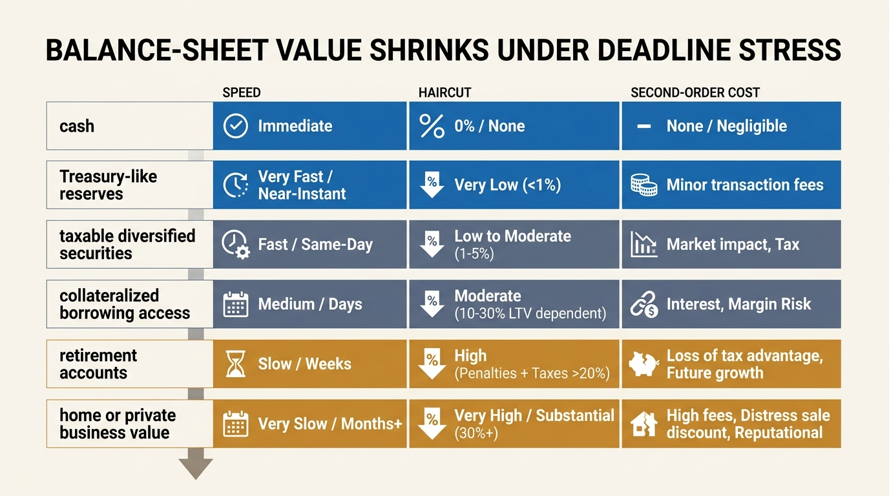
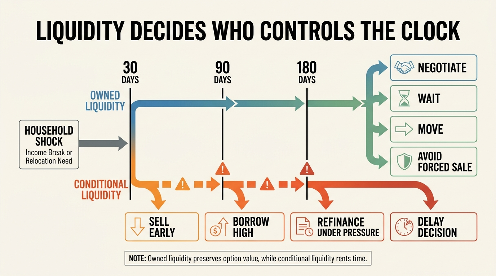

The Liquidity Illusion
Households usually discover the liquidity illusion on a deadline. The balance sheet looked strong when nothing demanded immediate action. It looks different when capital has to buy time this month rather than exist as a paper surplus.
Most people already know cash matters. The mistake is subtler than that. It is the habit of treating everything on the balance sheet as though it were one interchangeable reserve. Cash, home equity, retirement balances, concentrated stock, and business value sit on the same dashboard, but they do not clear into usable flexibility at the same speed, with the same haircut, or with the same future cost. A household can look solid on paper and still be one forced decision away from discovering it only had conditional liquidity.
Why The Balance Sheet Lies Under Time Pressure
The operational mistake is to price the balance sheet by quoted value when the real problem is deadline risk. A seven-figure household can still be fragile if the next six months depend on selling risk assets into a drawdown, borrowing against an asset at a punitive rate, or tapping retirement capital in a way that damages the future plan. The relevant question is not how much value exists in theory. It is how much capital can buy time without forcing a second loss.
Core thesis: real liquidity is a layered property, not a headline number. The relevant questions are how fast capital converts, how much value survives conversion, what financing or tax friction appears, and whether the move preserves or destroys future optionality. A balance sheet that only works under calm conditions is not liquid. It is conditionally liquid.

The Official Data Shows The Liquidity Floor Is Still Thin
The Federal Reserve's 2025 report on household well-being found that 63 percent of adults said they would cover an unexpected $400 expense with cash or its equivalent. That was better than the worst recent years, but the figure still implies a large minority without immediate low-friction shock capacity. The same report found that 54 percent of adults said they had rainy-day funds covering three months of expenses. That is not a useless benchmark, but it is still a narrow one. Three months is a short bridge in any high-cost labor market, and the survey does not tell us whether those funds are fully unencumbered cash or partly dependent on asset sales and balance transfers.
The 2022 Survey of Consumer Finances adds a second layer. Transaction accounts were widespread, but the conditional median transaction-account balance was only about $8,000. That is enough to absorb ordinary volatility. It is rarely enough to absorb relocation, a medical deductible cluster, legal costs, dependent care, or a prolonged income interruption. Households therefore lean on the rest of the balance sheet, and that is where the illusion begins.
The problem is not merely low balances. It is category confusion. A household dashboard often places cash, retirement balances, brokerage assets, and home value on the same screen with the same typography. The interface encourages an incorrect inference: that all large balance-sheet items are economically adjacent to cash. They are not. What matters during stress is conversion quality, not aggregate quoted value.
The cleanest correction is to think in haircuts rather than labels. A brokerage account may look liquid until a drawdown converts a discretionary sale into a forced one. A line of credit may look liquid until repricing changes its cost or lender behavior changes its availability. Home equity may look liquid until appraisal, underwriting, and transaction timing collide with the exact moment the household needs speed. The haircut is not only numeric. It is also temporal and strategic.
Retirement accounts make the mismatch especially easy to miss. They can be the largest line on a middle-class balance sheet, and they are real wealth in any long-horizon plan. They are still poor first responders to a near-term disruption because tax acceleration, penalties, plan rules, and future compounding loss can turn a nominal buffer into an expensive one. A liquidity report that treats retirement capital as ordinary cash is overstating resilience.
Liquidity Has At Least Four Dimensions
The first dimension is time. Cash clears immediately. Treasury bills and money market instruments clear quickly with minimal uncertainty. Taxable securities are generally close behind in calm markets, though even they impose settlement timing and sale-discipline demands. Real estate, retirement accounts, concentrated private-company equity, and private business value do not operate on the same clock.
The second dimension is price certainty. Cash preserves nominal value. Marketable securities do not. A household that plans to liquidate equities or crypto during a drawdown has not built a liquidity reserve. It has built a contingent reserve whose capacity shrinks when stress appears. Housing is even more exposed to this problem because sale timing, concession pressure, and transaction cost interact.
The third dimension is friction. Taxes, early-withdrawal penalties, bid-ask spreads, underwriting delays, loan covenants, and mandatory reserve requirements all reduce the part of the balance sheet that can buy time cleanly. The fourth dimension is side effects. Borrowing against assets may solve a near-term cash problem while creating a second one through interest cost, margin sensitivity, refinancing dependence, or collateral restrictions. A liquidity source that weakens the rest of the balance sheet is still liquidity. It is simply expensive liquidity.
Collateral Access Is Conditional, Not Owned
Many affluent households treat borrowing capacity as part of their liquid reserves. That is the most common high-balance-sheet version of the illusion. A home-equity line, securities-backed line, or business credit facility may be rational to maintain. It should still be classified as rented liquidity rather than owned liquidity. The distinction matters because the lender retains the option to reprice, reduce, or withdraw terms exactly when the borrower needs flexibility most.
Higher-rate conditions made this distinction harder to ignore. A decade of unusually cheap money allowed households to behave as though collateral conversion was almost neutral. That regime compressed the visible cost of borrowing and obscured the state dependence of the facility itself. When funding costs rise, the household can no longer pretend that a credit line is simply stored wealth in another form. It is leverage, and leverage changes the problem.
This is also why home equity is often misread. Home equity is real wealth. It is not automatically operational liquidity. Extracting it involves underwriting, interest cost, appraisal risk, local market conditions, and often a second decision about whether the household is willing to make its shelter asset carry a larger financing burden. The same is true, with different mechanics, for concentrated stock and private business stakes. Value exists. Conversion quality is separate.

Optionality Is The Correct Outcome Variable
The practical value of liquidity is not that it passes an emergency-fund rule. Its value is that it buys time without forcing concessions. A household with true liquidity can delay a bad sale, negotiate harder in a labor market, relocate when a geography stops making sense, or support a family shock without dismantling long-horizon capital. A household with only apparent liquidity makes decisions on a deadline.
That logic links this topic to several adjacent WealthMeter themes. The career optionality gap is often a disguised liquidity problem. The asset-rich, cash-poor paradox is a direct manifestation of the same structure. The hidden costs of ownership matter partly because they convert supposedly stable assets into recurring cash demands. Liquidity is therefore not a narrow treasury-management issue. It is the hidden architecture behind bargaining power.
A Better Household Liquidity Audit Uses Haircuts, Not Labels
- Separate owned reserves from conditional access. Cash, Treasury-like holdings, and immediately saleable low-volatility assets should sit in a different bucket from lines of credit and pledged collateral.
- Apply explicit haircuts. Discount taxable risk assets for drawdown risk, retirement assets for penalties or tax acceleration, and property-linked liquidity for transaction cost and time.
- Measure defense in months of full outflow. Use actual spending, not symbolic emergency targets detached from the household cost base.
- Run joint shocks, not single shocks. Model lower income, lower asset prices, and tighter credit in the same scenario. Stress rarely arrives one variable at a time.
- Label what preserves future freedom. The key distinction is whether a liquidity action buys time cleanly or solves the present by mortgaging the next decision.
An honest household report would therefore show at least four categories: immediate reserves, low-friction marketable assets, conditional collateral liquidity, and locked or event-dependent capital. It would also show the haircut assumptions behind each category rather than relying on comforting labels. That presentation is less flattering than a single net-worth total. It is also much closer to the question that matters under pressure: what can be used now without damaging the rest of the plan?
Known, Inferred, And Unknown
| Category | Assessment |
|---|---|
| Known | Federal Reserve survey data still shows a substantial minority of adults without immediate cash-equivalent coverage even for a modest unexpected expense. |
| Known | The 2022 Survey of Consumer Finances shows that many households hold only modest balances in transaction accounts relative to the cost of a serious disruption. |
| Known | Much household wealth sits in assets such as home equity, retirement accounts, and business ownership that are valuable but not instantly spendable. |
| Inferred | Net-worth dashboards and easy collateral products increase the risk that households overestimate their ability to absorb multi-month shocks without forced concessions. |
| Unknown | How many apparently affluent households would still look liquid after applying common stress haircuts for timing, taxes, price uncertainty, and financing dependence. |
The Practical Correction
The correction is not to hold everything in cash. That would sacrifice long-run compounding and usually make the household poorer in real terms. The correction is to stop asking one asset layer to do another layer's job. Cash exists to absorb immediacy. Diversified taxable capital exists to extend flexibility. Retirement assets exist to secure distant solvency. Housing and private business value create strategic wealth, not routine shock defense. Once those layers are separated, the liquidity illusion loses much of its force.
The better question is therefore not, "How large is the balance sheet?" It is, "Which part of this balance sheet can buy time without forcing a second loss?" That answer governs resilience far more accurately than the dashboard total ever will.
Further Reading Inside The Site
This article connects directly to The Asset-Rich, Cash-Poor Paradox, The Career Optionality Gap, and The Hidden Costs of Ownership. Together they show how weak liquidity design narrows freedom long before a household looks poor on paper.
Source List
Board of Governors of the Federal Reserve System. Report on the Economic Well-Being of U.S. Households in 2024: Savings and Investments. Published May 2025.
Board of Governors of the Federal Reserve System. Changes in U.S. Family Finances from 2019 to 2022. Published October 2023.
Bhutta N, Dettling LJ. Money in the Bank? Assessing Families' Liquid Savings Using the Survey of Consumer Finances. Federal Reserve FEDS Notes. 2018.
Jones J, Neelakantan U. Portfolios Across the U.S. Wealth Distribution. Richmond Fed Economic Brief. 2023.